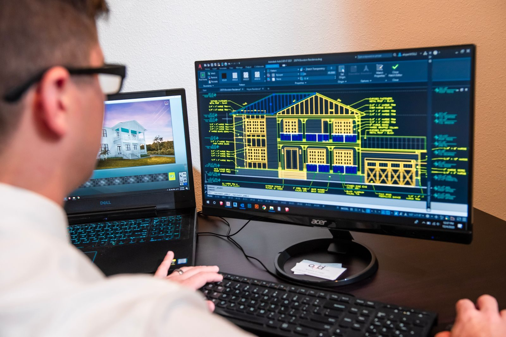
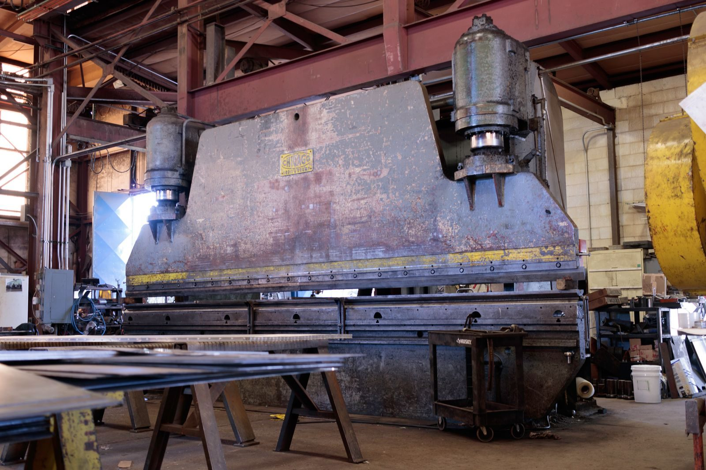

Why DFM pays
Most cost and delay in a machined part is decided at the design stage, not at the machine. A short design-for-manufacture review before release catches the issues that otherwise surface as an expensive question after the first cut.
The review does not need to be long. A consistent checklist run in twenty minutes catches the majority of the problems that cause re-quotes, design changes and scrapped first articles.

Geometry checks
Internal corners need a radius a cutter can actually cut. Pockets should stay within about four times the tool diameter in depth where possible. Thin walls should be thick enough to hold without chatter.
Deep narrow slots and sharp internal corners push a part towards EDM or drive the price up sharply. Checking these four items before release removes most of the surprises that appear in a quote.
Tolerance and finish checks
Every tight tolerance should have a functional reason. Surface finish should be specified only where it is functional. Datums should be clear, so inspection measures the same features the designer cares about. Where a finish adds thickness, the tolerance should account for it.
These four checks are about the drawing rather than the geometry, and they are the ones most often skipped because they require knowing what the part has to do - which is exactly the information the machine shop does not have.
Drawing and data checks
Send a 3D model (STEP or native CAD) as well as a drawing, keep the revision aligned, and state material, quantity and finish explicitly. A complete data package removes the most common cause of a quote-changing question: ambiguity.
Revision alignment matters more than it sounds. If the model and the drawing are one revision apart, the shop will quote one part and make another, and the discrepancy usually only becomes visible at first article inspection.

Commercial checks
Quantity, delivery date and destination all affect price and should be stated at the first enquiry. Setup cost is spread across a quantity, so a quote for ten parts is not ten times the price of one.
If the design is not final, say so. A shop that knows a change is coming will flag the features most likely to be affected, and can often quote an alternative that survives the change.
Run the review in this order
The review is more effective when run in a fixed sequence, because earlier checks eliminate later questions. Start with the data package and the revision. Then look at material and stock form, then geometry and tool access, then tolerance and datum logic, and finally the commercial inputs. A consistent order turns a twenty-minute review into something that can be delegated.
The reason to fix the order is that a review run ad hoc tends to spend its time on whatever catches the eye. The items that actually change a price - stock form, tool access, tolerance logic - are quieter than a stray sharp corner, so a checklist keeps attention where the money is.
Data package and revision alignment
Send a native or neutral 3D model and a drawing, both at the same revision. State material with a grade rather than a family name, quantity with any expected repeat, finish specification, and the delivery requirement. Note explicitly which dimensions are functionally critical.
Most quote-changing questions trace back to this list. A shop that has to infer the material grade will assume the cheapest plausible one; a shop that has to guess whether a dimension matters will price the worst case. Both assumptions are reasonable, and both are avoided by a complete first enquiry.

Geometry and tool access
Check that internal corners carry a radius a standard cutter can produce, and that pockets are not deeper than about four times the cutter diameter without a good reason. Confirm that a tool can actually reach every face that has to be machined, including the underside of a feature and the wall of a deep recess.
Then look for the shapes that force a second setup or a second process: a feature on the opposite face, a sharp internal corner, a slot narrower than a practical cutter, a wall thin enough to deflect under cutting load. Each of these is machinable, and each adds a step the price has to cover.
Tolerance and datum logic
Read the drawing as the inspector will. Is there a datum reference frame that can physically be reproduced? Does every tight tolerance have a functional reason, or are some there by habit? Does a finish that adds thickness sit on a toleranced surface, and if so, is the pre-finish dimension stated?
The most valuable question in this section is simply why each tight callout exists. Where the answer is clear, the shop can protect the feature deliberately. Where it is not, the shop either prices the worst case or asks - and the ask costs a day that the review would have saved.
Material and stock form
The stock form is a price decision that designers often leave to the shop. Bar stock, plate and near-net shapes consume different amounts of material and require different amounts of removal, and a part that fits a standard plate thickness avoids a cut. Where a near-net shape exists for a family of parts, using it can change the price more than any tolerance change.
Stock form also constrains tolerance. A part machined from thin plate is more prone to movement than the same nominal dimensions cut from solid bar, and a part with a large unsupported span will deflect. Choosing the stock size with the machining in mind is part of design for manufacture, not a purchasing detail.
Quantity, setup and the fixture question
State the quantity and be candid about how firm it is. Setup is a fixed cost spread across the batch, and a fixture is a further fixed cost that only makes sense above a certain volume. For a small first run, it is often cheaper to spend setup time on a soft jaw than to design and build a dedicated fixture.
Where a design is likely to change, say so at the enquiry. A shop that knows a revision is coming will often choose a fixturing approach that survives it, and will flag the features most likely to be affected. That conversation costs nothing and frequently saves a re-quote.
Cost drivers to challenge before release
Before releasing, ask which of these applies: a tight tolerance on a non-functional feature; a fine surface finish over a whole part; a feature requiring an extra setup; a material chosen for familiarity rather than for function; a specification that forces an additional operation such as masking. Each is a lever, and most of them can be released without touching the design intent.
The exercise is not to cheapen the part but to make sure the money is being spent on something the part needs. Where a tight tolerance protects a bearing fit, keep it. Where it protects nothing, releasing it reduces cost, lead time and the chance of a first-article surprise.
Documentation that prevents a re-quote
A shop's questions are a useful signal. If the same class of question recurs - material grade, finish thickness, critical dimensions, quantity firmness - the enquiry template is missing something. Adding those fields to the template removes the question from every future job.
The end state is an enquiry that a shop can quote without asking anything: model and drawing matched at a revision, material with a grade, finish with a specification, quantity with a repeat expectation, critical features named, and delivery date stated. That enquiry gets a comparable price from every supplier, which is the only way to compare suppliers at all.
Internal corners inherit the cutter radius
A milling cutter is round, so every internal corner it leaves is round too. If the drawing calls for a square internal corner, the shop has to either use a smaller cutter, which is slower and less rigid, or leave the corner with a radius and drop a note. Specifying an acceptable corner radius up front is one of the cheapest things a designer can do.
Depth matters as much as radius. A cutter needs reach, and reach costs rigidity: a deep, narrow pocket is cut with a long, thin tool that deflects, chatters, and cannot take a heavy cut. Keeping pocket depth to roughly three or four times the tool diameter keeps the process stable and the price predictable. Where a deep pocket is unavoidable, widening the corner radii lets a bigger tool in.
Wall thickness decides how much the part will move
Thin walls are where machined parts distort. Cutting one side of a thin wall releases internal stress and the wall springs, so the second side no longer cuts to the same dimension. Leaving extra stock and finishing walls in a later operation, or supporting the wall while it is cut, is usually cheaper than scrapping parts that moved after the last cut.
In plastics the constraint is different but similar in spirit: filled and unfilled thermoplastics both shrink as they cool, and walls that vary in thickness cool unevenly, which shows up as sink marks and warpage rather than as a dimensional error. Keeping wall sections as uniform as the design allows, and avoiding thick lumps next to thin webs, is a design decision that costs nothing and removes a whole class of defects.
The standards behind the checklist
The dimensional discipline in this checklist - datums, feature control frames and the distinction between a general and a specific tolerance - is geometric dimensioning and tolerancing, formalised in ASME Y14.5. Where a design is destined for moulding rather than machining, the mouldability rules reviewed here sit alongside the general account of injection moulding.
Frequently asked
How many parts should I order for a first run?
Enough to validate the process and cover the first build, without committing to a quantity that may need a design change. Where the design is still moving, a small first run plus a priced repeat is usually cheaper than one large order.
What does a manufacturability review actually cost?
At a competent shop it is part of quoting and costs nothing separately. What costs money is skipping it - a design change after tooling or fixturing exists is far more expensive than one made on paper.
Do I need a drawing if I send a STEP file?
The STEP file defines geometry; the drawing defines tolerance, datum, material and finish. Sending only the model leaves the shop to guess, and guesses about tolerance are the most expensive kind.